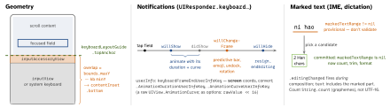
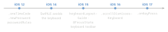

ios-platform · folio
In one line: The keyboard belongs to the first responder: iOS shows its
inputView (default: the system keyboard) + inputAccessoryView, and
your layout moves — with keyboardLayoutGuide (iOS 15) or from the
real end frame in the notifications. Input is shaped by traits, and
is provisional while an IME holds marked text.
Download PDF Print view LaTeX source


How it works
- First responder:
becomeFirstResponder()returnsBool—falseif not in a window yet orcanBecomeFirstResponderis false. Dismiss:resignFirstResponder(),view.endEditing(true), or anil-targetedresignFirstResponderaction. inputViewreplaces the keyboard (a picker);inputAccessoryViewrides above it. Chat composer: the VC returnstruefromcanBecomeFirstResponderand vends the bar as itsinputAccessoryView; withkeyboardDismissMode = .interactiveit follows the finger.keyboardLayoutGuide(iOS 15): pin to itstopAnchor; show/hide, height changes and animation come free;followsUndockedKeyboardfor the floating iPad keyboard. With no keyboard it sits at the safe-area bottom.- Scroll view: inset content + indicators by the overlap minus the bottom safe area (already in the adjusted inset),
scrollRectToVisible, reset on hide.UITableViewControllerdoes it for you. - Traits:
keyboardType(.emailAddress,.numberPad,.decimalPad,.URL);textContentTypedrives AutoFill —.username,.password,.newPassword(+passwordRules),.oneTimeCode(SMS code offered above the keyboard, no permission);returnKeyType;autocorrectionType,smartQuotesType,smartDashesType. UITextField: the delegate asks (shouldBeginEditing,shouldChangeCharactersInwith anNSRangein UTF-16,textFieldShouldReturn); control events report (.editingChangedincl. paste/AutoFill,.editingDidEndOnExit;addAction(_:for:)). A programmatictext =triggers neither.- Hardware keyboard:
UIKeyCommand(title:action:input: modifierFlags:)in a responder’skeyCommands(or thebuildMenu(with:)menu) — titled ones appear when Cmd is held;wantsPriorityOverSystemBehavior(iOS 15) wins keys the system uses. Raw keys:pressesBegan→UIPress.key. The software keyboard shrinks to a shortcut bar. - SwiftUI: avoids the keyboard itself (iOS 14; opt out
.ignoresSafeArea(.keyboard)). iOS 15:@FocusState+.focused,.submitLabel+.onSubmit, aToolbarItemGroup(placement: .keyboard); iOS 16.scrollDismissesKeyboard; iOS 17.onKeyPress.
Example
// iOS 15+: pin the composer to the keyboard - no observers
composer.bottomAnchor.constraint(
equalTo: view.keyboardLayoutGuide.topAnchor).isActive = true
// scroll view, from keyboardWillChangeFrame:
@objc func kbChanged(_ n: Notification) {
guard let end = n.userInfo?[UIResponder
.keyboardFrameEndUserInfoKey] as? CGRect,
let screen = view.window?.screen else { return }
let kb = view.convert(end, from: screen.coordinateSpace)
let overlap = max(0, view.bounds.maxY - kb.minY
- view.safeAreaInsets.bottom)
scroll.contentInset.bottom = overlap
scroll.verticalScrollIndicatorInsets.bottom = overlap }
// SwiftUI
TextField("Email", text: $email).focused($field, equals: .email)
.textContentType(.emailAddress).keyboardType(.emailAddress)
.submitLabel(.next).onSubmit { field = .password }Traps
- A hard-coded keyboard height, or only
willShow: the predictive bar, emoji, hardware or floating keyboard change the frame — handlewillChangeFrame, or use the guide. - Keyboard frame is in screen coordinates; in Split View / Stage Manager the window is not the screen — convert.
becomeFirstResponder()inviewDidLoadreturnsfalse(no window): do it inviewDidAppear. SwiftUI’s twin: setting@FocusStateinonAppearcan be dropped — defer it.- Max length in
shouldChangeCharactersIn: the range is UTF-16, emoji are several units, and marked text is not final — compute the result withRange(range, in:), skip whilemarkedTextRange!=nil. - Smart quotes / dashes / autocorrect in username, code or search fields silently change
"into“— set.no. .numberPadhas no Return key: add a Done in the accessory view / keyboard toolbar.
Timeline
